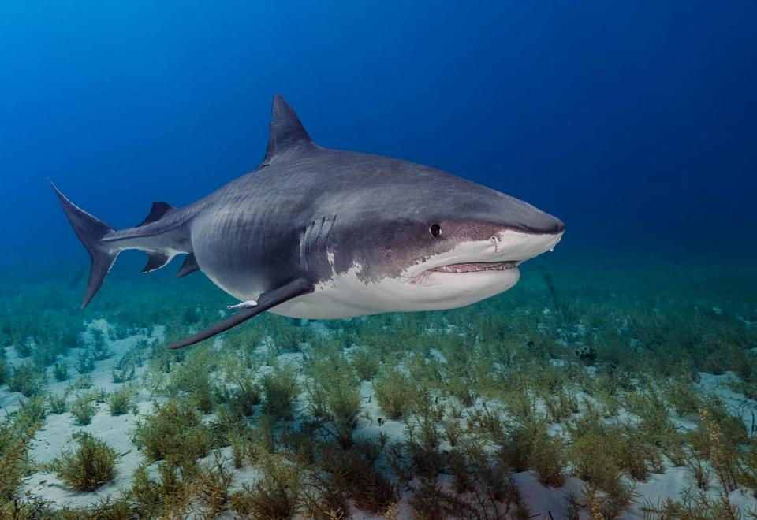
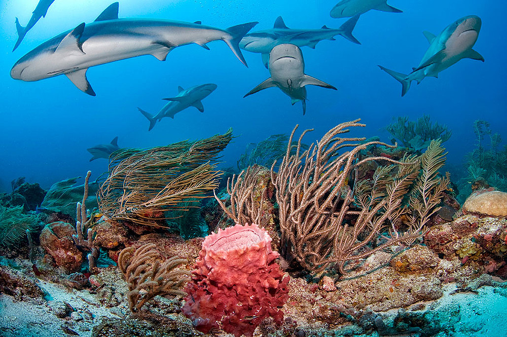

El apelativo de "tigre" se debe a que, como el gran felino asiático, este tiburón presenta una serie de rayas oscuras transversales en el dorso y costados que tienden a difuminarse con la edad. Su piel varía del azul al verde azulado lo que supone un gran camuflaje ya que este tiburón suele cazar atacando a su presa desde abajo pasando desapercibido en la profundidad. En la zona ventral y cara es de color blanco. El morro es chato y la cabeza, bastante aplastada, presenta una forma casi rectangular, donde destaca una boca parabólica de gran tamaño que se encuentra rodeada por unos pliegues labiales muy desarrollados. Los ojos son grandes y circulares y los orificios nasales alargados y muy adelantados, dispuestos casi en posición frontal. Los dientes son grandes, afilados y muy puntiagudos, provistos de bordes fuertemente aserrados, salvo en la parte interna de la punta. Esta peculiar morfología les hace perfectamente capaces de romper huesos de grandes animales y caparazones de tortugas. En caso de perderse alguno de los dientes durante el ataque, otro crece para ocupar su lugar. El cuerpo es bastante corpulento, pero se adelgaza de forma acusada según se acerca a la aleta caudal. El peso máximo comprobado ha sido de 1524 kg, correspondiente a un ejemplar capturado en Nueva Gales del Sur, Australia, en 1954, que medía 5,5 m. La aleta dorsal, larga y puntiaguda, está muy desarrollada; las aletas delanteras son anchas y en forma de hoz, y la caudal presenta un lóbulo superior de mayor tamaño que el inferior. Las otras cuatro aletas posteriores (una dorsal y otras tres ventrales) son bastante pequeñas. La aleta anal tiene forma aparente de quilla.
Los tiburones tigre también habitan en zonas poco profundas alrededor de grandes cadenas de islas, incluyendo lagunas y atolones de coral en las costas de las islas oceánicas. Se le suele observar en la superficie, pero se ha reportado a profundidades de 350 m (1085 pies). Los tiburones tigre se distribuyen por todo el mundo en aguas tropicales y templadas cálidas. Aparecen en hábitats de plataforma, arrecifes y taludes, y ocasionalmente están asociados a arrecifes de coral.
